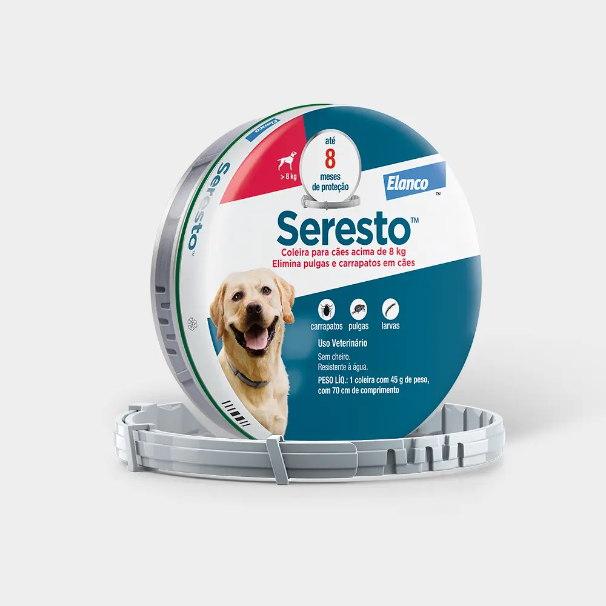
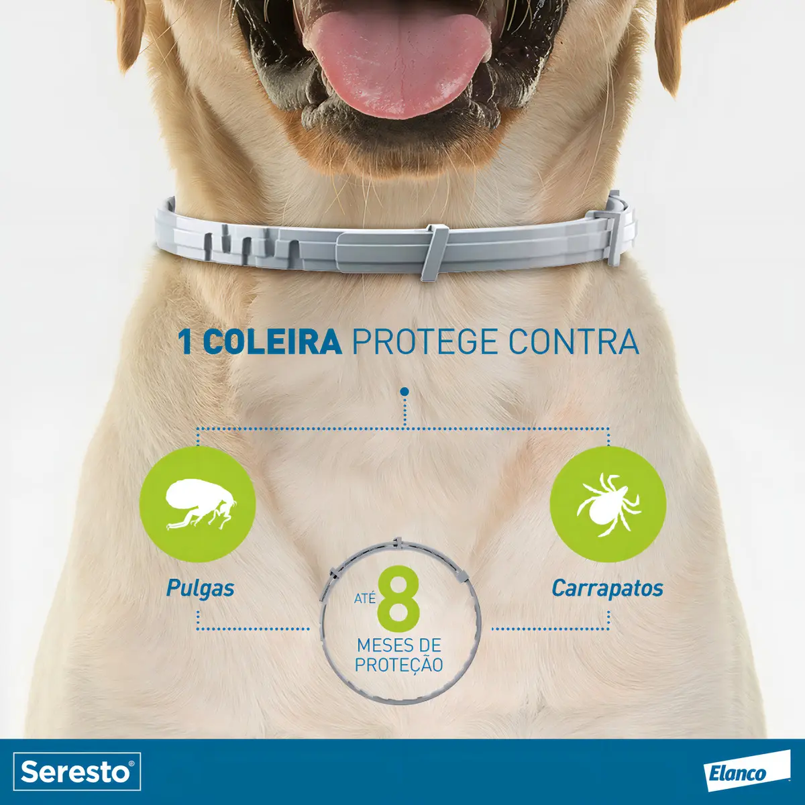
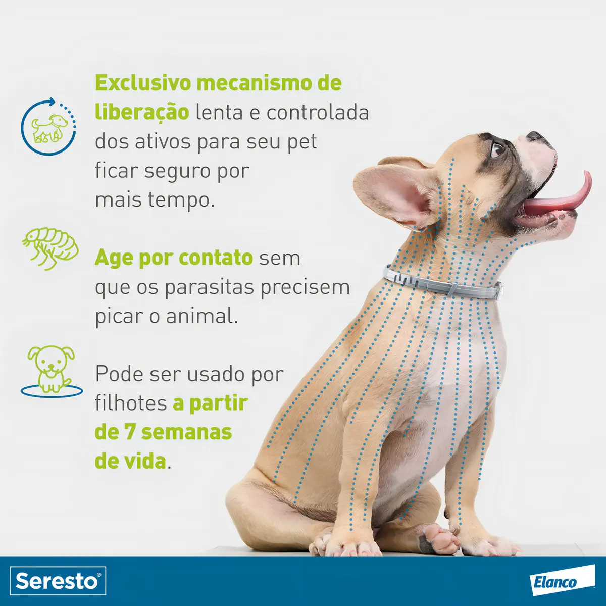
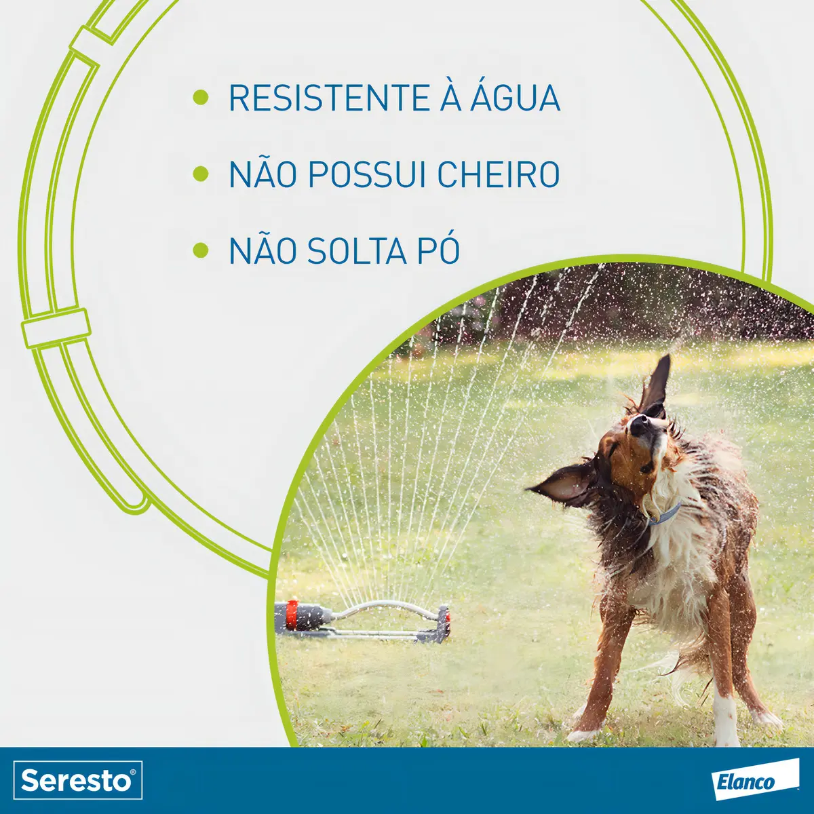
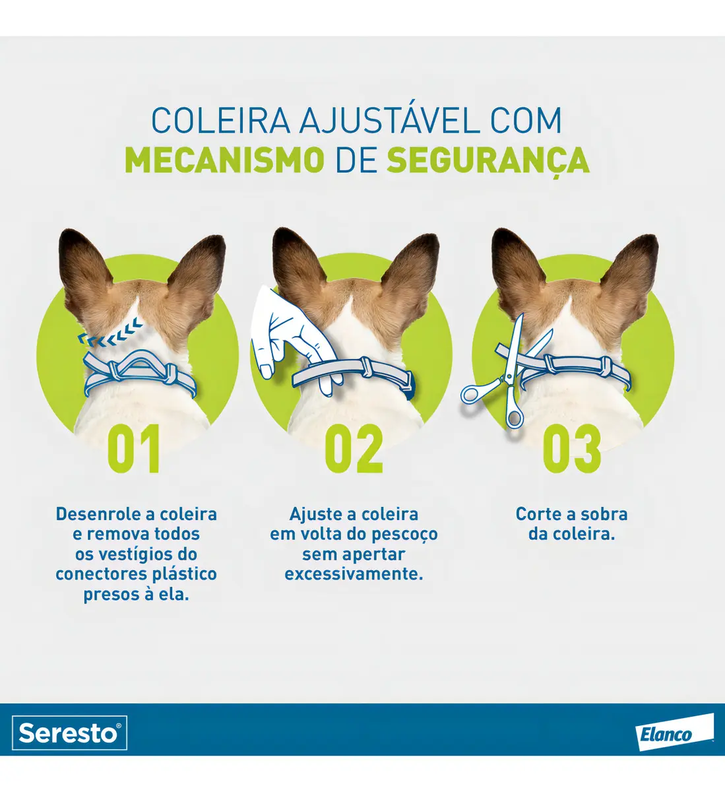
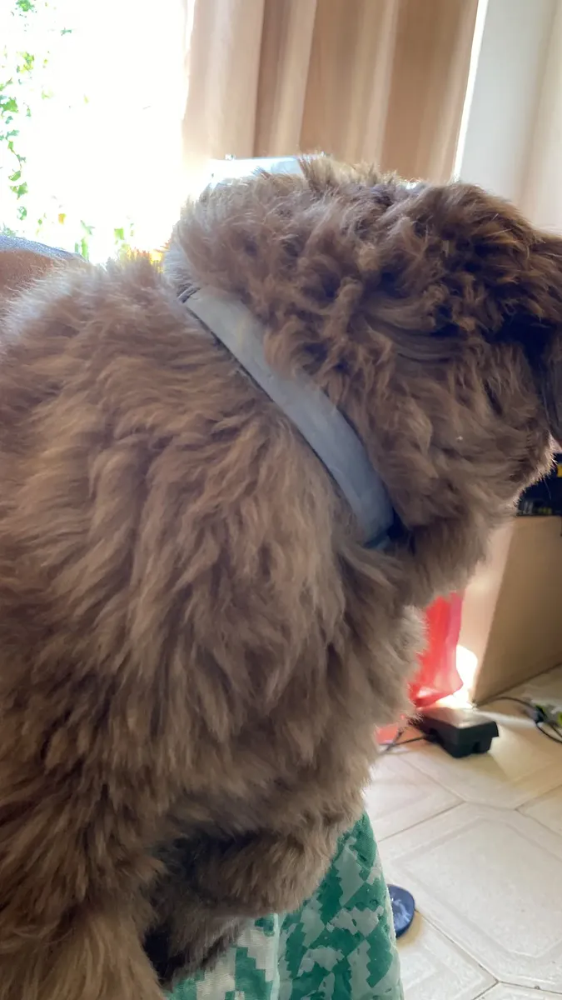
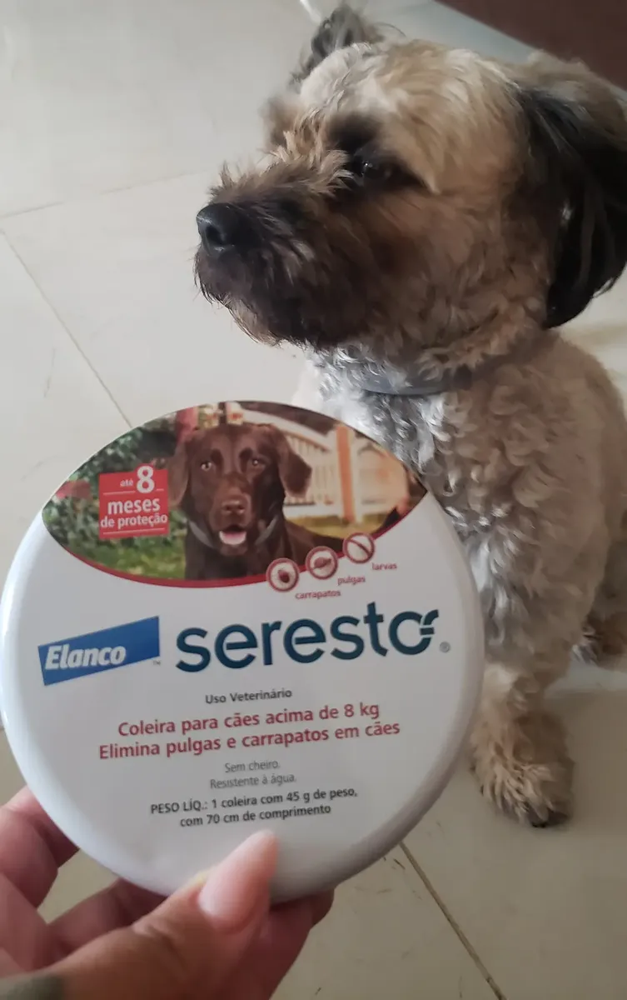
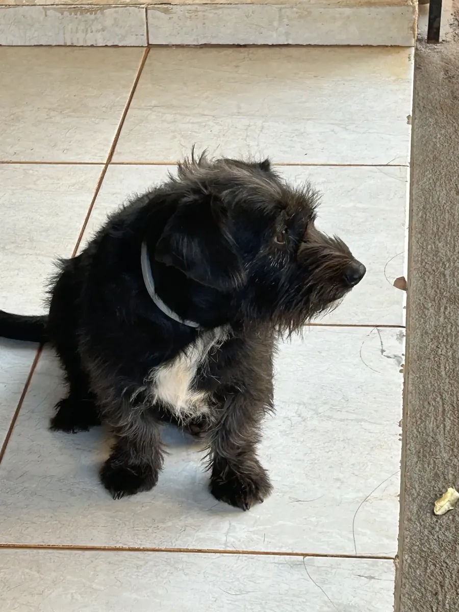
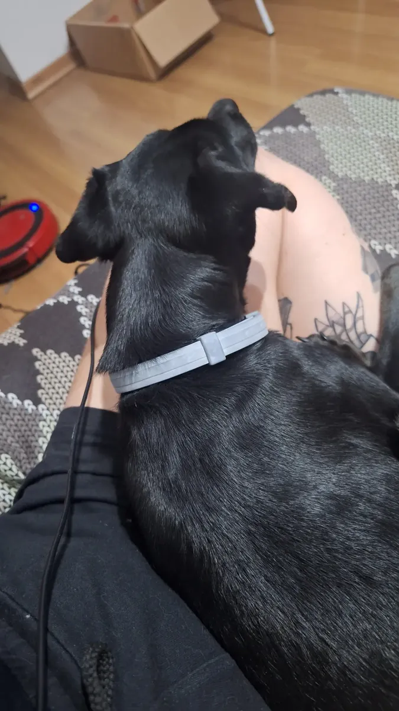

Sim, a coleira Seresto (Elanco) para cães acima de 8kg vale a pena para a maioria dos tutores: são até 8 meses de proteção contínua contra pulgas e carrapatos por cerca de R$ 20 por mês, com nota 4,9 de 5 em 10.417 avaliações no Mercado Livre e mais de 50 mil unidades vendidas só no anúncio analisado (Mercado Livre — Coleira Seresto Acima de 8kg Elanco, retrieved 2026-11-14). Os dois cuidados reais são comprar uma coleira original (a Seresto é um dos antiparasitários mais falsificados em vendas online) e acompanhar a pele do pescoço nas primeiras semanas.
Coleira Seresto acima de 8kg: R$ 159,90 no Mercado Livre (preço em 14/11/2026), vendedor MercadoLíder com nota fiscal.Link de afiliado — sem custo extra para você.
Ver preço atual →Resumo rápido
- Princípios ativos: imidacloprida 10% + flumetrina 4,5%. Age por contato, sem o parasita precisar picar o cão.
- Até 8 meses de proteção por unidade, segundo a Elanco. Banhos muito frequentes podem encurtar esse tempo.
- Preço em 14/11/2026: R$ 159,90 no Mercado Livre (cerca de R$ 20/mês).
- Nota 4,9/5 em 10.417 avaliações e 3.975 comentários no Mercado Livre.
- Sem cheiro, não solta pó e é resistente à água.
- Para cães acima de 8kg. Para cães menores e gatos existe a versão "até 8kg" (38 cm).
- Há coleiras falsas sem nenhum ativo à venda online. Veja como saber se a Seresto é original.
A Seresto é uma coleira antiparasitária de uso veterinário, fabricada pela Elanco, que age por contato: os ativos são liberados de forma lenta e controlada ao longo de até 8 meses, eliminando pulgas, carrapatos e larvas sem que o parasita precise picar o cão primeiro. Segundo material do fabricante, a linha pode ser usada por filhotes a partir de 7 semanas de vida, mas essa observação vale para a linha Seresto em geral — a versão analisada aqui é especificamente indicada para cães acima de 8kg, então confirme o peso do seu cão contra a faixa da embalagem antes de comprar.
Cada coleira grande (45 g) contém imidacloprida 10% e flumetrina 4,5%, segundo a bula do fabricante (bula Seresto cão grande). A imidacloprida é um inseticida que age principalmente sobre pulgas e larvas. A flumetrina é um piretroide que mata e repele carrapatos. Os dois ativos se espalham pela camada de gordura da pele e dos pelos a partir do pescoço, e é por isso que a coleira precisa ficar em contato com a pele.
A diferença prática para os comprimidos orais (Bravecto, Simparic, NexGard, Credeli) está no modo de ação: o comprimido age pelo sangue, então a pulga ou o carrapato precisa picar o cão para morrer. Na coleira, o parasita morre por contato com o pelo. Isso pesa para tutores em áreas com muito carrapato ou para cães com alergia à picada de pulga.

Segundo o material da Elanco, a coleira começa a matar as pulgas nas primeiras 24 horas após a colocação. Para carrapatos que já estavam no cão, o efeito completo pode levar até 48 horas. Por isso, numa infestação forte, ainda dá pra ver parasitas nos primeiros dois dias. Isso não indica falha.

| Característica | Detalhe |
|---|---|
| Laboratório | Elanco |
| Marca | Seresto |
| Animal recomendado | Cães acima de 8kg |
| Comprimento da coleira | 70 cm |
| Princípios ativos | Imidacloprida 10% + flumetrina 4,5% |
| Peso da coleira | 45 g |
| Duração da proteção | Até 8 meses por unidade |
| Parasitas | Pulgas, larvas de pulga, carrapatos e piolhos |
| Resistência à água | Sim |
| Cheiro | Não possui |
| Preço no Mercado Livre | R$ 159,90 (de R$ 290,50) ou 12x R$ 15,80. No kit de 2, sai a R$ 144 por unidade |
(Mercado Livre — ficha técnica do produto, retrieved 2026-11-14; preço sujeito a alteração pelo vendedor.)
A coleira é indicada para uso contínuo mesmo em contato com água: segundo a Elanco, banho, chuva ou piscina não anulam o efeito, e não é preciso tirar a coleira para o banho. A ressalva da bula é que banhos com xampu ou mergulhos muito frequentes podem reduzir a duração da proteção. Na prática, um cão que toma banho toda semana ou nada com frequência deve chegar mais perto de 5 ou 6 meses do que de 8. Isso bate com o comprador citado abaixo que troca "de 6 em 6 meses". Vale lembrar que a exposição a pulgas e carrapatos aumenta com o tempo que o cão passa em área externa — se o seu quintal não é fechado, uma coleira GPS com cerca virtual ajuda a limitar o espaço de circulação e reduzir esse contato.

A coleira é ajustável ao pescoço do animal e vem com um mecanismo de corte da sobra, seguindo três passos: desenrolar e remover os vestígios dos conectores plásticos, ajustar em volta do pescoço sem apertar excessivamente, e cortar a sobra. É um processo simples, mas que exige atenção no ajuste: a coleira precisa ficar justa o suficiente para não passar pela cabeça do cão, sem apertar a ponto de incomodar — o infográfico oficial de instalação (imagem acima) mostra o passo a passo completo fornecido pela Elanco.

Para a grande maioria dos cães, sim. Mas é um medicamento veterinário, então tem efeitos colaterais e restrições. Segundo a bula:
Sobre a polêmica: em 2021, uma reportagem nos Estados Unidos levantou milhares de relatos de incidentes associados à Seresto registrados na agência ambiental do país (EPA). A EPA analisou os dados e manteve o registro do produto. Relato de incidente é uma notificação feita por qualquer pessoa e não prova que a coleira causou o problema. Mesmo assim, a regra prática continua valendo: observe o cão nas primeiras semanas e tire a coleira se notar algo anormal.
O anúncio do Mercado Livre diz que a coleira "combate leishmaniose", e a descrição afirma que ela "reduz o risco de doenças transmitidas por vetores". Na Europa, a bula da Seresto cita a redução do risco de transmissão da leishmaniose pelo mosquito-palha, e há um estudo brasileiro de 2022 sobre a eficácia da coleira de imidacloprida e flumetrina nesse uso (Alves et al., 2022). Mesmo assim, se você mora em área com casos de leishmaniose, a prevenção deve ser decidida com o veterinário. Pode envolver coleira repelente específica (as de deltametrina, como Scalibor, são a referência tradicional), vacina e controle do mosquito, e não só a Seresto.
Esse é o ponto que mais importa para quem compra online. Autoridades sanitárias da França (ANSES) e da Bélgica (AFMPS) analisaram coleiras "Seresto" vendidas pela internet e encontraram unidades sem nenhum dos dois princípios ativos. O cão fica sem proteção, e o tutor acha que a Seresto "não funciona". A própria Elanco mantém uma página de alerta sobre falsificações (Elanco — how to avoid fake Seresto collars).
Sinais práticos para checar antes e depois da compra:
Em 2026 a Elanco anunciou um novo selo de autenticação nas latas, com um adesivo que muda de aspecto quando a embalagem é inclinada, começando por alguns países. Até a data desta atualização, não confirmamos se ele já está nas latas vendidas no Brasil.
Com 10.417 avaliações, nota 4,9 de 5 e 3.975 comentários, o resumo de opiniões gerado pelo Mercado Livre diz que a coleira é "altamente elogiada por sua eficácia em eliminar pulgas e carrapatos sem causar mal aos animais, mesmo para aqueles com alergias". O resumo também destaca a durabilidade, a ausência de cheiro e a preferência de muitos tutores pela coleira em vez de comprimidos orais (avaliações do produto no Mercado Livre, retrieved 2026-11-14). O próprio Mercado Livre avisa que a contagem inclui opiniões de compradores de outros países. Alguns comentários de compradores brasileiros mostram o que eles relatam na prática:
"Excelente coleira seresto! Comprei para o meu cachorro acima de 8 kg. Nada resolvia contra as pulgas, lógico, mesmo limpando o local onde o meu cachorro dormia. Cansei de gastar com nexgar..."
★★★★★comprador verificado, Mercado Livre · 66 pessoas acharam útil"Uso essa coleira há três anos e nunca tive problemas. O cachorro não pega nenhuma pulga, carrapato, nem berne. Moro em chácara."
★★★★★comprador verificado, Mercado Livre · 25 pessoas acharam útil"Meu cachorro usa há anos e se adaptou super bem. Em algumas épocas, durou até mais de 12 meses. Hoje em dia, como ele passeia bastante, trocamos de 6 em 6 meses..."
★★★★★comprador verificado, Mercado Livre · 34 pessoas acharam útil"Essa coleira em termos de estética é depressiva, parece um tipo de bracelete de manicômio, cinza sem nenhum design sequer, porém se você é uma pessoa mais preocupada com a função..."
★★★★☆comprador verificado, Mercado Livre · 74 pessoas acharam útil"Comprei a acima de 8k pois a minha maya tem uns 10k, porém sobrou uma ponta grande e tive que cortar. A coleira menor daria perfeitamente..."
★★★★★comprador verificado, Mercado Livre · 29 pessoas acharam útilA crítica mais votada é sobre estética, não sobre eficácia, e esse padrão se repete: quem reclama, reclama do visual, e quem elogia, elogia o resultado contra pulgas e carrapatos. O último comentário traz uma dica útil: para cães perto do limite de 8kg, a coleira grande vai sobrar bastante e precisa ser cortada. Isso é normal e previsto no passo a passo do fabricante.
Além do texto, compradores também enviam fotos junto das avaliações no Mercado Livre. As imagens abaixo são reais, enviadas por tutores diferentes — não é possível confirmar qual foto pertence a qual comentário específico citado acima, por isso aparecem aqui como galeria separada.




Fotos enviadas por compradores reais na seção de avaliações do Mercado Livre, reproduzidas aqui como ilustração das avaliações citadas nesta página (fonte, retrieved 2026-09-14).
Em 14 de novembro de 2026, a coleira Seresto para cães acima de 8kg estava a R$ 159,90 no Mercado Livre (de R$ 290,50, 44% de desconto) ou em 12x de R$ 15,80. No kit com 2 unidades, cada uma sai por R$ 144 (Mercado Livre — ficha do produto, retrieved 2026-11-14; preço sujeito a alteração pelo vendedor). Com até 8 meses de proteção por unidade, o custo fica perto de R$ 20 por mês, ou R$ 18 no kit de 2. O kit compensa para quem tem dois cães ou já quer deixar a troca garantida.
| Produto | Formato | Duração por aplicação | Como mata o parasita |
|---|---|---|---|
| Seresto (acima de 8kg) | Coleira | Até 8 meses | Contato com o pelo, sem precisar picar |
| Bravecto | Comprimido | Até 12 semanas | Pelo sangue (precisa picar) |
| Simparic, NexGard, Credeli | Comprimido | 30 a 35 dias | Pelo sangue (precisa picar) |
| Frontline Plus | Pipeta | Cerca de 30 dias | Contato (evitar molhar nos primeiros dias) |
Na conta por mês, a Seresto costuma sair mais barata que os comprimidos para cães médios e grandes, cujas doses ficam mais caras conforme o peso. Os preços de cada comprimido por faixa de peso estão no nosso comparativo de antipulgas para cachorro.
Para cães com até 8kg e para gatos, a Elanco vende a Seresto Cães e Gatos até 8kg, uma coleira de 38 cm com a mesma duração de até 8 meses. Ela costuma custar um pouco mais que a grande: em novembro de 2026, o menor preço monitorado pelo Buscapé girava em torno de R$ 163. Não use a versão grande cortada em gatos: a dose e a indicação são diferentes.
| Prós | Contras |
|---|---|
| Proteção de até 8 meses por unidade | Visual simples, criticado por parte dos compradores |
| Sem cheiro e sem soltar pó | Durabilidade real pode cair para 6 meses com banhos frequentes |
| Resistente à água (banho e chuva) | Preço mais alto que coleiras antiparasitárias comuns não veterinárias |
| Nota 4,9/5 em mais de 10 mil avaliações | Exige ajuste correto para não ficar frouxa ou apertada |
| Age por contato, sem o parasita precisar picar | Pode irritar a pele do pescoço em alguns cães |
| Custo de cerca de R$ 20/mês | Muito falsificada em vendas online: exige vendedor confiável |
| Mecanismo de segurança com corte da sobra | Restrita a cães acima de 8kg (há outra versão para porte menor) |
A coleira Seresto vale a pena para a maioria dos cães acima de 8kg, com algumas exceções. Vale a pena se você quer passar meses sem pensar em antipulgas, se o cão tem contato frequente com carrapatos (quintal, sítio, chácara) ou se ele não aceita comprimido. O volume de avaliações (10.417) e a nota (4,9) indicam resultado consistente em escala, não só marketing do fabricante, e o custo mensal fica abaixo do da maioria dos comprimidos para cães médios e grandes.
Pode não ser a melhor escolha se o cão tem pele sensível no pescoço, se toma banho ou nada toda semana (a duração cai) ou se na casa tem outro pet que vive mordendo coleiras. Nesses casos, um comprimido oral costuma ser mais prático.
Antes de aplicar, vale conversar com o veterinário do seu cão, principalmente se ele tiver histórico de sensibilidade de pele, for filhote, estiver grávida/lactante, ou já usar outro produto antiparasitário — o uso combinado de mais de um produto pode não ser recomendado pelo fabricante.
Se o seu cão sai bastante de casa (passeios longos, quintal, área externa), a coleira antiparasitária costuma andar junto com outro tipo de proteção: localização em tempo real. Veja o guia completo de coleira GPS para pet ou, se o problema for fuga recorrente, o que considerar em uma coleira GPS para cachorro que foge muito. E se o seu cão é mais do tipo "sofá", vale entender por que cão de casa também pega pulga e carrapato — a prevenção não é exclusiva de quem passeia bastante.
A coleira não é a única forma de proteção contra pulgas e carrapatos — se você prefere um comprimido oral em vez de um acessório fixo no pescoço, veja nosso comparativo de 6 antipulgas para cachorro (Bravecto, Simparic, Credeli, NexGard, Frontline e Vermitril), com duração, preço e para qual cão cada um é indicado.
Segundo o fabricante (Elanco), a coleira age por contato, liberando os ativos de forma lenta e controlada para eliminar pulgas, carrapatos e larvas por até 8 meses, sem que o parasita precise picar o animal. Nas 10.417 avaliações do produto no Mercado Livre, a nota média é 4,9 de 5, e eficácia e boa tolerância pelos cães são os pontos mais citados. Quando a coleira "não funciona", as causas mais comuns são coleira frouxa (sem contato com a pele) ou produto falsificado.
O fabricante indica até 8 meses de proteção contínua por unidade. Em avaliações de compradores, alguns relatam durabilidade de 6 a 12 meses dependendo da rotina do cão, e banhos frequentes tendem a reduzir esse tempo.
Segundo a Elanco, ela começa a matar pulgas nas primeiras 24 horas. Carrapatos que já estavam no cão podem levar até 48 horas para morrer.
Pode, e não precisa tirar a coleira. Ela é resistente à água. O que a bula alerta é que banhos com xampu ou mergulhos muito frequentes podem encurtar a duração da proteção.
Para a maioria dos cães, não. O efeito colateral mais comum é irritação leve na pele do pescoço (coceira, vermelhidão ou queda de pelo). Se a irritação persistir ou surgir ferida, tire a coleira e procure o veterinário. Não é indicada para filhotes com menos de 7 semanas.
Compre de loja oficial ou vendedor confiável com nota fiscal e desconfie de preço muito abaixo do mercado. Confira se a lata está lacrada e tem texto em português, registro no MAPA e bula. Autoridades europeias já encontraram coleiras falsas sem nenhum princípio ativo à venda online.
Na maioria dos casos, não é necessário: a coleira sozinha já cobre pulgas e carrapatos. Combinar dois antiparasitários só faz sentido com orientação veterinária, por exemplo numa infestação muito forte ou numa estratégia de prevenção de leishmaniose.
Não. Para gatos existe a versão Seresto Cães e Gatos até 8kg, com dose e tamanho próprios. Não corte a coleira grande para usar em gato ou em cão pequeno.
Não. Segundo o fabricante, a coleira não tem cheiro e não solta pó, além de ser resistente à água.
Este conteúdo é informativo e não substitui orientação veterinária. Consulte um médico-veterinário antes de aplicar qualquer produto antiparasitário no seu animal, especialmente em filhotes, fêmeas gestantes/lactantes ou pets com histórico de sensibilidade de pele. Veja nossa política editorial e como verificamos as fontes citadas neste artigo.
🐾 Confira o preço e a disponibilidade atual no Mercado Livre.
Ver no Mercado LivreLink de afiliado: podemos receber uma comissão por compras feitas através deste link, sem custo adicional para você.
Nildo Alves — tutor de pets e curador de produtos no Smart Pet Gadgets. Pesquisa especificações de fabricante, dados de mercado e fontes veterinárias publicadas por terceiros para ajudar outros tutores a escolher melhor.
Sobre o Smart Pet Gadgets · Contato · Política editorial e de afiliados